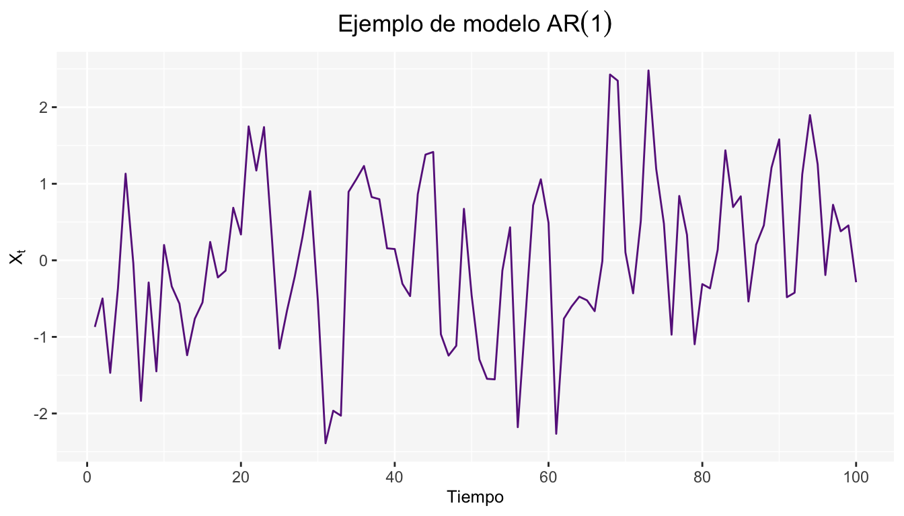

Capítulo 4 Funciones de autocovarianza y autocorrelación
Como se mencionó en el apartado anterior, tenemos que para un proceso estacionario \(X_t\), su esperanza es \(E[X_t] = \mu\) y su varianza \(Var[X_t]=E[X_t-\mu]^2=\sigma^2\) las cuales son constantes; así como las covarianzas \(Cov(X_t,X_s)\), que son funciones que solamente dependen del tiempo que transcurre entre \(t\) y \(s\); entonces en este caso podemos escribir la covarianza entre \(X_t\) y \(X_{t+k}\) como:
\[ \gamma_k=Cov(X_t,X_{t+k})=E(X_t-\mu)(X_{t+k}-\mu) \]
Y su correlación como: \[ \rho_k =\frac{Cov(X_t,X_{t+k})}{\sqrt{Var(X_t)}\sqrt{Var(X_{t+k})}}=\frac{\gamma_k}{\gamma_0} \]
donde, \(Var(X_t) = Var(X_{t+k}) = \gamma_0\).
También conocida como la función de autocorrelación (ACF), la cual es una medida de la relación para los valores de la serie respecto a los valores de esta misma, observados \(k-t\) unidades de tiempo.
La función de autocorrelación tiene las siguientes propiedades:
- \(\rho_0=1\)
- \(-1\leq\rho_j\leq 1\)
- \(\rho_j=\rho_{-j}\)
En general, se utiliza la función de autocorrelación muestral \(r_k\), la cual queda determinada por la siguiente expresión
\[ r_k=\frac{\sum\limits_{t = k+1}^n (X_t-\bar{X})(X_{t-k}-\bar{X})}{\sum\limits_{t = 1}^n(X_t-\bar{X})^2} \]
Para \(k = 1, 2, \dots\) y donde \(\bar{X}\) es la media de las observaciones.
4.1 Función de autocorrelación parcial
La función de correlación parcial estima la correlación entre una observación \(k\) tiempos después de la observación actual removiendo los efectos de las correlaciones de las observaciones intermedias; es decir:
\[ \pi_j=corr(X_j,X_{j-k}|X_{j-1},X_{j-2},...X_{j-k-1}) \]
Para este caso, el estimador apropiado es la función de autocorrelación parcial muestral Cryer and Chan (2008), el cual puede obtenerse utilizando \(r_k\) para la siguiente expresión recursiva.
\[ \pi_j=\frac{\rho_j-\sum\limits_{k = 1}^{j-1}\pi_{j-1, k}\rho_{j-k}}{1-\sum\limits_{k = 1}^{j-1}\pi_{j-1, k}\rho_k} \] donde \(\pi_{j, k} = \pi_{j-1, k}-\pi_{j}\pi_{j-1, j-k}\) para \(k = 1,2, \dots, j-1\).
4.2 Correlograma
Una vez calculadas las funciones de autocorrelación y autocorrelación parcial, se grafican contra los diferentes rezagos para obtener los correlogramas. Estos son serán de gran utilidad para la identificación del modelo, tal como se menciona en el capítulo 12 y en el complemento a este material SeriesTCode. Como ejemplo, se presentan los gráficos correspondientes a los datos de nottem.

4.3 Prueba de Ljung-Box
Esta prueba permite probar en forma conjunta que todos los coeficientes de autocorrelación son simultáneamente iguales a cero. La prueba está definida como
\[ LB=n(n+2)\sum_{k=1}^m\frac{\hat\rho_k^2}{n-k}\sim \chi_{(m)}^2 \] donde \(n\) es el tamaño de la muestra, \(m\) la longitud del rezago.
Las hipótesis de esta prueba son:
\[ \begin{array}{cc} H_0:\mbox{Los coeficientes de autocorrelación son simultáneamente iguales a cero}\\ H_1: \mbox{Alguno de los coeficientes de autocorrelación es distinto de cero} \end{array} \]
Entonces si \(LB\) excede el valor crítico de la tabla \(Ji\) cuadrada al nivel de significancia seleccionado, no se acepta la hipótesis de que todos los coeficientes de autocorrelación son iguales a cero, por lo tanto al menos algunos de ellos deben ser diferentes de cero2.
4.4 Ejercicios
- ¿Qué mide la auto-corelación? (Seleccione la opción correcta)
- Dependencia Lineal entre multiples puntos de series de tiempo diferentes observadas a tiempos distintos.
- Dependencia lineal entre dos puntos de la misma serie observada a tiempos distintos.
- Dependencia cuadráatica entre dos puntos de una misma serie observada a tiempo distintos.
- Dependencia lineal entre dos puntos de series distintas observadas al mismo tiempo.
- El precio diario de oro durante 252 días de trading en 2005 están en el objeto gold del paquete TSA.
- Grafique la serie de tiempo. ¿Que patrón se observa?
- Grafique la serie de las diferencias de los logaritmos de los datos. ¿El gráfico sugiere que un modelo estacionario podría ser apropiado para las diferencias de los logaritmos? Explique brevemente.
- Utilice la función ACF para las diferencias de los logaritmos de los datos. ¿Es evidencia suficiente de que los log-precios del oro siguen un modelo de caminata aleatoria?, ¿por qué?
- Suponga que el correlograma de una serie de tiempo con 100 observaciones tiene: \(\hat\rho_1\) = 0.31, \(\hat\rho_2\) = 0.07,\(\hat\rho_3\) = −0.05, \(\hat\rho_4\)= 0.06, \(\hat\rho_5\) = −0.03, \(\hat\rho_6\) = 0.27, \(\hat\rho_7\) = 0.08,\(\hat\rho_8\)= 0.05,\(\hat\rho_9\) = 0.02, \(\hat\rho_10\)= −0.01. ¿Dada esta información que se debería tener en cuenta al proponer un modelo de predicción para esta serie?